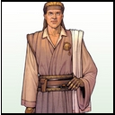

Forums galactiques > Assemblée Galactique : diplomatie officielle > Arriver du Prince Kaine représentant du consortium
Pages : 1
| Veed Morlish Respect diplomatique : 5  30/06 ETU 01:47 | Score : 5 Détails [HJ = Oups désolé j'ai utilisé le mauvais pseudonyme dans le titre veuillez me pardonner.]
Tout était calme autour de la planète ou siège l'assemblée Galactique. Le trafic spatial était des plus normale,une grande majorité des vaisseaux qui volait autour de la planète était assez connue. Sortant de l'hyperespace,un vaisseau au forme inconnue apparue en orbite géostationnaire autour de la planète. D'après les scanners du contrôle de circulation spatial de la planète,le vaisseau faisait environ 5OOm et ce distinguait des autres vaisseaux grâce a sa conception en double plateau. Aucun signe d'agressivité fut relevé. Une transmission holographique fut transmise. Un homme Habiller avec une toge apparue. "Salutation a vous. Je suis le prince Veed Morlish. J'ai été mandaté par la reine mère de mon peuple pour parler en son nom. Nous somme un peuple pacifiste plustôt tourné vers le commerce. Nos vaisseaux son fait pour la défense et son le plus souvent utiliser pour diverse mission de patrouille ou contrôle douanier. Dans notre société,seul les femmes de ligné nobles son destiner a devenir reine mère et a avoir ainsi tout les pouvoirs sur le consortium. Les hommes son souvent reléguer au second rôle et on très peu de pouvoir. La reine mère désirerait faire entrer le consortium dans cette assemblée afin qu'elle puisse faire entendre sa voie. Je reste en orbite géostationnaire si vous souhaité m'envoyer un message n'hésité pas." |
Pages : 1
Forums galactiques > Assemblée Galactique : diplomatie officielle > Arriver du Prince Kaine représentant du consortium